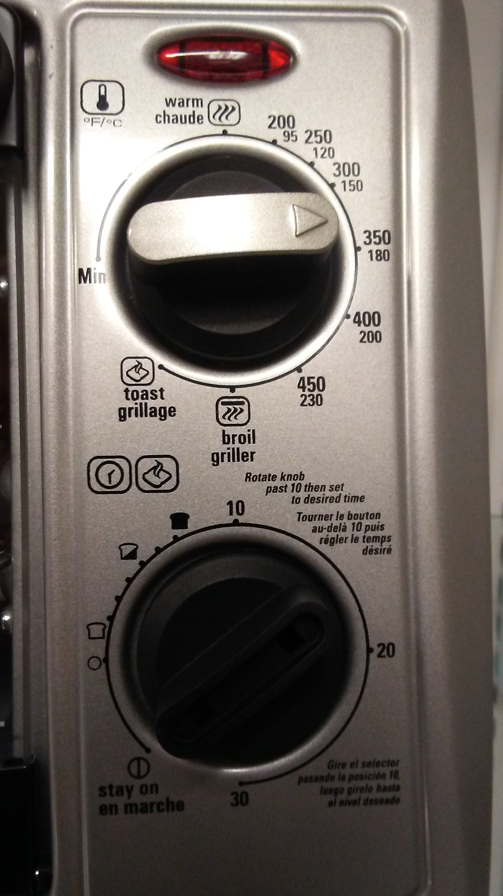

The Toaster Oven
Purpose of the Toaster Oven
- Toaster ovens' main purpose is to cook food. Toaster ovens
require less time to heat to a temperature, but at the cost of only
being able to cook or bake smaller food. For example, a toaster oven is
not capable of baking a cake. If I were to own a toaster oven, it would
be an appropriate second option to cook toast (the first option being
my actual toaster).
Toaster Oven Controls
- The entity in the center is a door for accessing the
interior of the toaster oven. Due to the heuristic that the door must
be removed - and thus pulled out - in order to access the interior, the
human correctly pulls on the handle on top to open the door.
- The following picture shows a close-up of the handle.
- When the toaster oven is opened, a grating can be found
inside. This can be removed by sliding it along the toaster oven's
grooves - a useful heustristic that tends to indicate slidable objects.
Snce the grating is shaped like a planar surface, a person can utilize
the heuristic that one can place objects and food on the grating, which
is the correct utilization.

- To
the right is a collection of controls, indicators, and labels. At the
top, there is an indicator light that shows that the food is operating
when it is operating on food.
- The first knob from the top can
be rotated on its axis. The pointer on the knob show the current
setting. The outline on the edge of the knob shows the radial
area the knob can traverse. Temperatures are labelled in terms of
Fahrenheit and Celsius, as designated by the label to the top left of
the knob. Four additional settings are available for broiling,
toasting, warming, and using minimum temperature. A mistake the
user can make is uncertainty on how the F and C map to the
temperatures, since the Fand C are lined horizontally whereas the
temperatures a vertically aligned.
- The bottom knob determines
the time in which the toaster oven will operate in terms of minutes.
When the knob is turned and set to a time, the timer shall begin, the
operation light turns on, and the object in the toaster oven shall be
operated upon. The images and times are not obvious immediately; no
units are used, and the pictures, which indicate how toasted toast will
be, is not particularly specific. When the timer finishes, the toast is
done, a bell rings, and the operation light turns off. Since the bottom knob is missing a pointer like the top knob, the addition of one would improve understanding of the device.
- Furthermore, the use of a French translation expands the label usage to French-speaking peoples.
- Color of the labels should be more vibrant so that it can be easier seen in darker locations.
- A user could be confused that the operation light means that the toaster oven has power instead before use.
Potential Improvements

- This drawing demonstrates the more glaring issues with the toaster oven.
- A pointer has been added to the bottom knob to give the heuristic of where the knob points.
- An additional 5 has been added to the bottom knob to give an image time a numeric value.
- Fahrenheit and Celsius is more clearly marked, being in the same orientation and size relation as the labels.
- A label has been added to show when the indicator light shall be on.